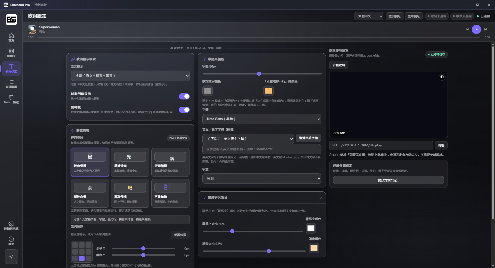
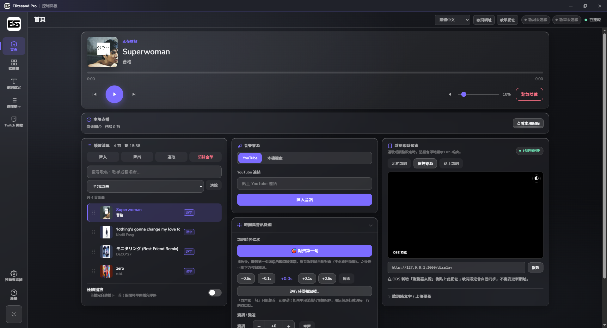
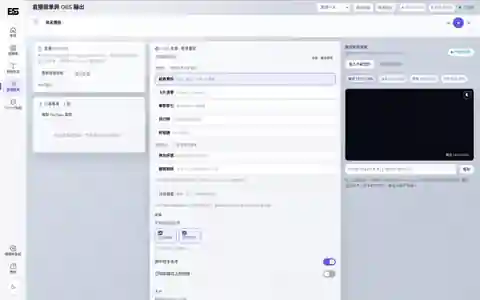

01
歌詞樣式與畫面同步
管理字體、顏色、位置與動畫模板，所有設定可直接同步到 OBS Browser Source。

整合歌曲匯入、歌詞搜尋、OBS 動態歌詞、直播歌單與 Twitch 點歌。為 VTuber 與歌回實況主設計，介面支援繁中、英文、日文、韓文與簡中。


從開台前整理歌曲，到直播中控制播放、歌詞與點歌，再到 OBS 畫面輸出，都在同一套介面內完成。
管理字體、顏色、位置與動畫模板，所有設定可直接同步到 OBS Browser Source。

把已唱、正在唱與接下來的歌曲排成適合直播的視覺層級，並依輸出尺寸自動調整。

聊天室指令與忠誠點數請求集中進待確認區，避免觀眾提交內容直接污染正式歌單。

保持你原本的 OBS 工作方式，只把歌曲與歌詞控制集中到 Elitesand Pro。
貼上 YouTube 連結、播放清單，或使用本機音檔。
搜尋多來源歌詞，必要時校時與調整顯示。
加入固定 Browser Source，即時同步動畫與歌單。
看看不同模板、字體與動態效果在直播畫面中的呈現。
Elitesand Pro v0.9.9 提供 Installer 與 Portable 版本；自 v1.0.0 起僅提供 Installer。